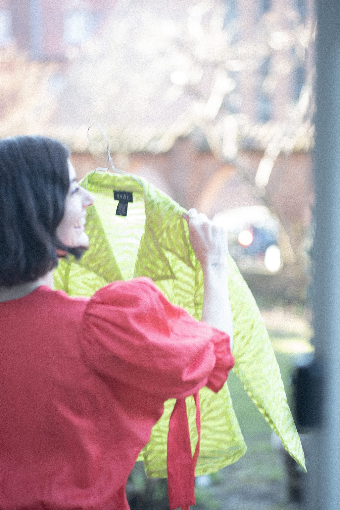

GUIDE
Sådan får du dit tøj til at holde længere
Når du vil skabe en mere bæredygtig garderobe, handler det ikke kun om, hvad du køber - men også om, hvordan du passer på det, du allerede har. Små rutiner i hverdagen kan gøre en stor forskel for både din garderobe og miljøet. Ved at give dit tøj lidt ekstra kærlighed kan du både skåne planeten og få din stil til at holde længere. Herunder får du en enkel guide med 5 tips til at pleje dit tøj med omtanke.

1. Vask mindre - og klogere
Mange af os vasker tøj oftere end nødvendigt. Både CONCITO og Forbrugerrådet Tænk peger på, at hyppig vask slider på tøjet og øger miljøbelastningen. Prøv i stedet at lufte tøjet mellem brug og fjerne små pletter i hånden. Det giver dit tøj længere levetid.
2. Vælg skånsomme vaskeprogrammer
Lave temperaturer og skåneprogrammer gør en stor forskel. Ifølge CONCITO kan mindre energiforbrug under vask være en af de mest effektive måder at reducere klimaaftryk i hverdagen. Bonus: Dit tøj holder sig flot længere.
3. Brug mildt vaskemiddel
Tænk anbefaler miljømærkede, milde vaskemidler. De slider mindre på fibrene og er bedre for både huden og miljøet. Små valg i vaskekælderen gør mere, end man tror.
4. Drop tørretumbleren
Tørretumbleren bruger meget energi og er hård ved tøjet. CONCITO fremhæver, at lufttørring er et simpelt greb, der både sparer strøm og forlænger tøjets levetid. Hæng tøj på bøjler eller et stativ - det holder formen bedre.
5. Reparer og tilpas
Tænk viser, at forlængelse af tøjets levetid er blandt de mest klimavenlige valg, vi kan tage. En løs knap eller en lille syning er sjældent en grund til at udskifte et helt stykke tøj. Reparationer giver ekstra år til din garderobe - og ekstra stilpoint.
Ved at justere få vaner kan du bygge en garderobe, der holder længere - og samtidig træffe mere bevidste valg for både stil og planet. StilBevidst gør det nemt at træffe bevidste valg i garderoben. Husk! Små ændringer, stor forskel for miljøet.
Kilder
- Forbrugerrådet Tænk (2023): Vejen til et tøjforbrug med mindre miljø- og klimaaftryk
- Concito (2024): Hotspotanalyse: Fremme af et klimarigtigt tøjforbrug